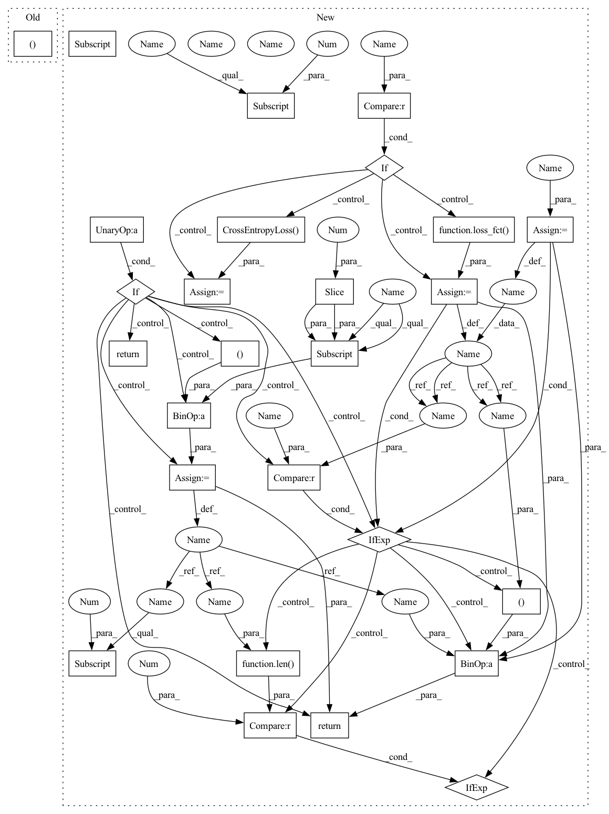

Pattern ID :15084

Before Change
inputs = {k:paddle.to_tensor([v]) for (k, v) in inputs.items()}
logits = model(**inputs)
sequence_output, _ = self.ernie_m(input_ids,
position_ids=position_ids,
attention_mask=attention_mask)
After Change
output_hidden_states=output_hidden_states,
return_dict=return_dict)
sequence_output = self.dropout(outputs[0])
logits = self.classifier(sequence_output)
loss = None
if labels is not None:
loss_fct = paddle.nn.CrossEntropyLoss()
loss = loss_fct(logits.reshape((-1, self.num_classes)),
labels.reshape((-1, )))
if not return_dict:
output = (logits, ) + outputs[2:]
return ((loss, ) + output) if loss is not None else (
output[0] if len(output) == 1 else output)
return TokenClassifierOutput(
loss=loss,
logits=logits,
hidden_states=outputs.hidden_states,
In pattern: SUPERPATTERN
Frequency: 3
Non-data size: 27
Instances
Fragment ID: 50897089
Project Name: paddlepaddle/paddlenlp
Commit Name: 2173cf358b13562d17789889dedcd44a1d2ff270
Time: 2022-09-13
Author: 1435130236@qq.com
File Name: paddlenlp/transformers/ernie_m/modeling.py
M Class Name: ErnieMForTokenClassification
N Class Name: ErnieMForTokenClassification
M Method Name: forward(8)
N Method Name: forward(4)
M Parent Class: ErnieMPretrainedModel
N Parent Class: ErnieMPretrainedModel
M File Name: paddlenlp/transformers/ernie_m/modeling.py
N File Name: paddlenlp/transformers/ernie_m/modeling.py
M Start Line: 449
M End Line: 482
N Start Line: 601
N End Line: 671
'>
Before Change
attention_mask = attention_mask.reshape(
shape=(-1, attention_mask.shape[-1]))
_, pooled_output = self.ernie_m(input_ids,
position_ids=position_ids,
attention_mask=attention_mask)
After Change
attention_mask = attention_mask.reshape(
shape=(-1, attention_mask.shape[-1]))
outputs = self.ernie_m(input_ids,
position_ids=position_ids,
attention_mask=attention_mask,
output_attentions=output_attentions,
output_hidden_states=output_hidden_states,
return_dict=return_dict)
pooled_output = self.dropout(outputs[1])
logits = self.classifier(pooled_output) // logits: (bs*num_choice,1)
reshaped_logits = logits.reshape(
shape=(-1, self.num_choices)) // logits: (bs, num_choice)
loss = None
if labels is not None:
loss_fct = paddle.nn.CrossEntropyLoss()
loss = loss_fct(reshaped_logits, labels)
if not return_dict:
output = (reshaped_logits, ) + outputs[2:]
return ((loss, ) + output) if loss is not None else (
output[0] if len(output) == 1 else output)
return MultipleChoiceModelOutput(
loss=loss,
logits=reshaped_logits,
hidden_states=outputs.hidden_states,
'>
Fragment ID: 50897090
Project Name: paddlepaddle/paddlenlp
Commit Name: 2173cf358b13562d17789889dedcd44a1d2ff270
Time: 2022-09-13
Author: 1435130236@qq.com
File Name: paddlenlp/transformers/ernie_m/modeling.py
M Class Name: ErnieMForMultipleChoice
N Class Name: ErnieMForMultipleChoice
M Method Name: forward(8)
N Method Name: forward(4)
M Parent Class: ErnieMPretrainedModel
N Parent Class: ErnieMPretrainedModel
M File Name: paddlenlp/transformers/ernie_m/modeling.py
N File Name: paddlenlp/transformers/ernie_m/modeling.py
M Start Line: 510
M End Line: 546
N Start Line: 699
N End Line: 773
'>
Before Change
inputs = {k:paddle.to_tensor([v]) for (k, v) in inputs.items()}
logits = model(**inputs)
sequence_output, _ = self.ernie_gram(input_ids,
token_type_ids=token_type_ids,
position_ids=position_ids,
attention_mask=attention_mask)
After Change
inputs = {k:paddle.to_tensor([v]) for (k, v) in inputs.items()}
logits = model(**inputs)
outputs = self.ernie_gram(input_ids,
token_type_ids=token_type_ids,
position_ids=position_ids,
attention_mask=attention_mask,
output_attentions=output_attentions,
output_hidden_states=output_hidden_states,
return_dict=return_dict)
sequence_output = outputs[0]
sequence_output = self.dropout(sequence_output)
logits = self.classifier(sequence_output)
loss = None
if labels is not None:
loss_fct = paddle.nn.CrossEntropyLoss()
loss = loss_fct(logits.reshape((-1, self.num_classes)),
labels.reshape((-1, )))
if not return_dict:
output = (logits, ) + outputs[2:]
return ((loss, ) + output) if loss is not None else (
output[0] if len(output) == 1 else output)
return TokenClassifierOutput(
loss=loss,
logits=logits,
hidden_states=outputs.hidden_states,
'>
Fragment ID: 50897091
Project Name: paddlepaddle/paddlenlp
Commit Name: 2173cf358b13562d17789889dedcd44a1d2ff270
Time: 2022-09-13
Author: 1435130236@qq.com
File Name: paddlenlp/transformers/ernie_gram/modeling.py
M Class Name: ErnieGramForTokenClassification
N Class Name: ErnieGramForTokenClassification
M Method Name: forward(9)
N Method Name: forward(5)
M Parent Class: ErnieGramPretrainedModel
N Parent Class: ErnieGramPretrainedModel
M File Name: paddlenlp/transformers/ernie_gram/modeling.py
N File Name: paddlenlp/transformers/ernie_gram/modeling.py
M Start Line: 389
M End Line: 396
N Start Line: 397
N End Line: 468